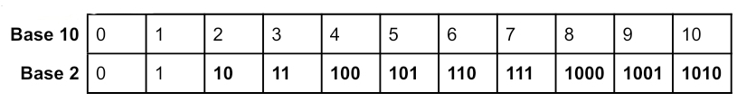
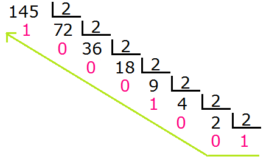
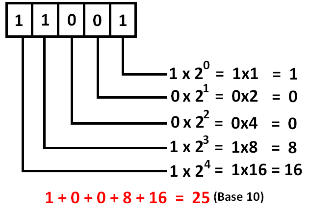

NÚMEROS BINÁRIOS
Os números binários, é um sistema de numeração de base dois, compostos por dois dígitos: 0 e 1. Onde o número zero, vale zero. O número um, vale um. Mas o número dois, vale 10. O número três, vale 11.
Mas como isso funciona, é simples, é uma sequência igual os números de base 10, mas como só podemos usar 0 e 1, tiramos os outros números que possuem dígitos diferentes de 0 e 1. Ou seja, ao invés de ser 0, 1, 2, 3… é 0, 1, 10, 11…
Exemplo:

BASE 10 PARA A BASE 2
Para a conversão da base 10 para a base 2, é necessário fazer várias divisões. Primeiramente divide o número, que quer saber em binário, por 2 e guarda o resto. Após isso vai dividir o quociente por 2 e guardar novamente o resto.
Irá repetir isso até o quociente ser 1.
O número em binário será o quociente da última divisão e todos os restos, da direita para a esquerda.

BASE 2 PARA A BASE 10
Para converter a base 2 em base 10, você deve, a partir do número mais a direita multiplicá-lo pela base 2 elevado a um número, em ordem crescente, começando do zero, da direita para a esquerda. Ou seja, multiplicamos o dígito pela potência da base. Após calculado, é somado as contas, o resultado será o dígito em base 10.
